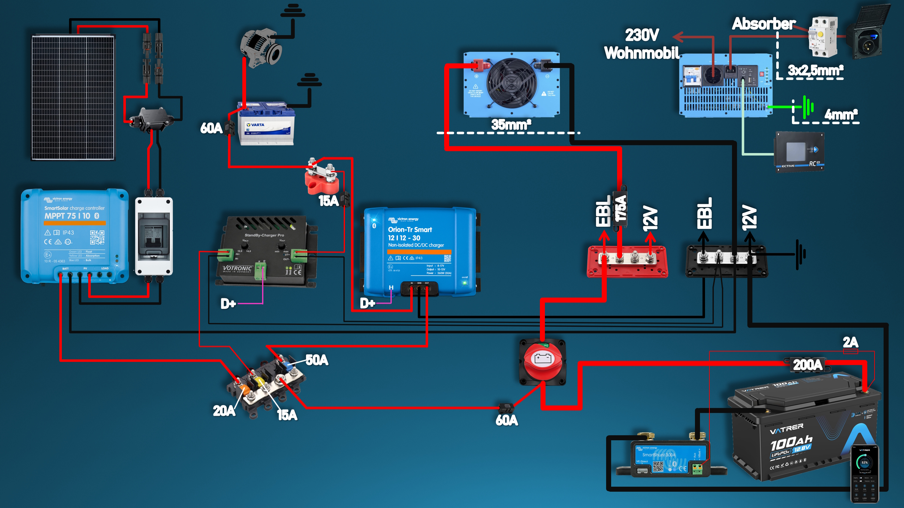
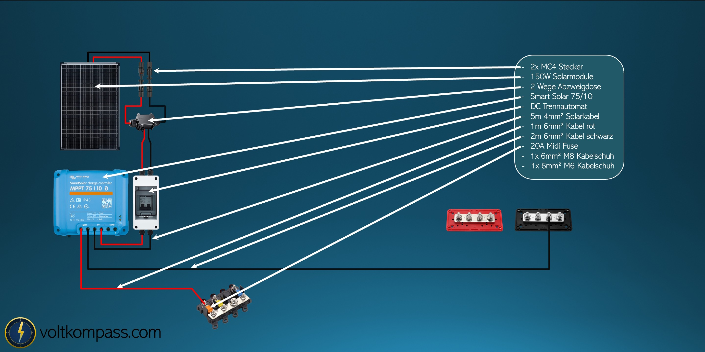
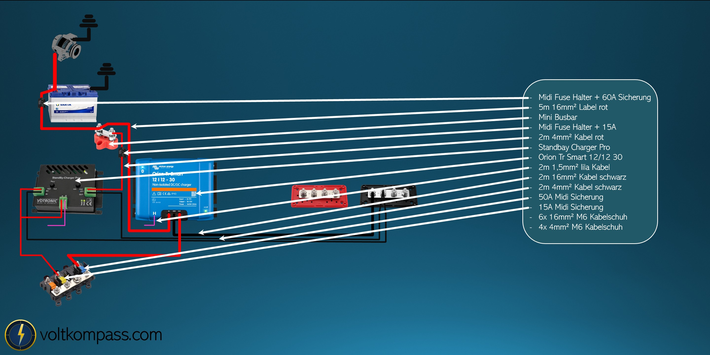

Wohnmobil-Solaranlage Stufe 1: kleines autarkes Solarsystem mit LiFePO4 und Ladebooster.
Stufe 1 ist für Wohnmobilisten gedacht, die viel fahren und meist nur zwei bis drei Tage frei stehen. Der Fokus liegt deshalb weniger auf maximaler Solarleistung, sondern auf einem sauberen Ladebooster, einer soliden Batterie-Basis und einer kleinen Solarunterstützung.

Wohnmobil Solaranlage Stufe 1 in 60 Sekunden
Diese Stufe ist eine kompakte Wohnmobil Solaranlage für kurze Standzeiten, regelmässige Fahrtage und eine solide 12-V-Stromversorgung. Sie passt, wenn du eine Camper Solaranlage nachrüsten möchtest, aber kein grosses Autarkie-System mit riesiger Dachfläche brauchst.
- Geeignet für
- Reisende, die meist zwei bis drei Tage frei stehen und danach wieder fahren.
- Kernsystem
- 100 Ah LiFePO4, 150 W Solar, 30-A-Ladebooster, SmartShunt und 1000-W-Wechselrichter.
- Kosten
- Die gezeigte Materialliste liegt bei etwa 1882 €, gerundet also bei ca. 1900 €.
- Schaltplan
- Der Beitrag dient als Wohnmobil Stromversorgung Schaltplan zur Orientierung, ersetzt aber keine individuelle Elektroplanung.
- Grenze
- Für lange Winterstandzeiten oder starke 230-V-Verbraucher sollte direkt grösser geplant werden.
Das Video zur Wohnmobil-Solaranlage Stufe 1
Im Video zeige ich die Stufe-1-Anlage Schritt für Schritt: Batterie-Basis, Solarbereich, Ladebooster, Wechselrichter, Verdrahtung und Kosten.
Video direkt auf YouTube ansehen: Wohnmobil-Solaranlage Stufe 1
Wofür Stufe 1 gedacht ist
Dieses System passt zu Reisenden, die regelmässig weiterfahren und nicht wochenlang autark an einem Ort stehen wollen. Die Solaranlage dient vor allem als Unterstützung, während die Hauptarbeit beim Nachladen der Ladebooster während der Fahrt übernimmt.
Die Anlage bleibt bewusst kompakt: eine 100-Ah-LiFePO4-Batterie, ein Victron SmartSolar MPPT 75/10, ein 30-A-Ladebooster, ein optionaler Standby-Charger für die Starterbatterie und ein 1000-W-Spannungswandler für einfache 230-V-Nutzung.
Wenn du deine eigene Wohnmobil-Solaranlage oder Batterieanlage planen möchtest, kannst du diesen Beitrag als Orientierung nutzen. Für ein konkretes Fahrzeug sollte daraus aber immer ein individueller Elektroplan mit passenden Sicherungen, Kabelwegen und Komponenten entstehen.

100 Ah LiFePO4 als Basis
Das Herz des Systems ist ein 100-Ah-Lithiumakku mit App-Anbindung. Über die App lassen sich wichtige Akkudaten kontrollieren. Dazu kommen ein Hauptschalter, ein roter und ein schwarzer Busbar-Knotenpunkt sowie ein SmartShunt.
Der SmartShunt ist optional, aber sinnvoll. Viele Akku-BMS erfassen sehr kleine Ströme nicht sauber. Gerade im Winter kann die angezeigte Kapazität dadurch mit der Zeit wegdriften. Der Shunt misst präziser, weil alle relevanten Ströme über ihn laufen.
- Plusseite mit 35 mm² über Hauptsicherung und Hauptschalter zum Plus-Knotenpunkt
- Hauptsicherung im Beispiel: 200 A
- Minusseite mit 35 mm² über den SmartShunt zum Minus-Knotenpunkt
- Spannungsmessleitung des Shunts mit ca. 1,5 mm² und 2-A-Sicherung direkt am Pluspol
- Karosserieanbindung im Beispiel mit 16 mm²
Je länger die Leitungswege werden, desto wichtiger werden passende Kabelquerschnitte. Das System sollte möglichst kompakt aufgebaut werden.

150 W Solar als Unterstützung
Auf der Solarseite kommt ein Victron SmartSolar MPPT 75/10 zum Einsatz. Die 75 steht für die maximale PV-Leerlaufspannung, die 10 für den maximalen Ausgangsstrom zur Batterie. Ein 150-W-Modul mit etwa 38 V Arbeitsspannung und ca. 46 V Leerlaufspannung passt gut dazu.
Im Sommer kann ein flach montiertes 150-W-Modul unter sehr guten Bedingungen bis zu etwa 900 Wh am Tag erzeugen, also rund 75 Ah bei 12 V. Im Winter sind unter guten südlichen Bedingungen eher etwa 310 Wh beziehungsweise 26 Ah realistisch. In Deutschland ist der Winter für Solar deutlich schwieriger.
- PV-Seite mit MC4-Steckern, Dachdurchführung und optionalem Sicherungsautomaten
- Solarleitung im Beispiel: 4 mm²
- Ausgang vom Laderegler zur Batterie: 6 mm²
- Absicherung Laderegler-Ausgang im Beispiel: 20 A

Der Ladebooster ist der eigentliche Schwerpunkt
Weil Stufe 1 für Reisende gedacht ist, die regelmässig fahren, spielt der Ladebooster die Hauptrolle. Im Beispiel wird ein Victron Orion-Tr Smart 12/12-30 verwendet. Er lädt die Aufbaubatterie während der Fahrt kontrolliert mit bis zu 30 A.
Der Eingang vom Ladebooster wird mit 16 mm² von der Starterbatterie versorgt und mit 60 A abgesichert. Der Ausgang zur Aufbaubatterie ist ebenfalls mit 16 mm² ausgelegt und im Beispiel mit 50 A abgesichert. Da es ein nicht isolierter Booster ist, wird der gemeinsame Minus am Minus-Knotenpunkt eingebunden.
Optional kann ein Votronic Standby-Charger Pro die Starterbatterie versorgen, wenn das Wohnmobil steht. Besonders bei modernen Fahrzeugen mit Standby-Verbrauch kann das sinnvoll sein. Über das D+-Signal werden Ladebooster und Standby-Charger so verriegelt, dass nichts im Kreis läuft.
1000 W Wechselrichter für einfache 230-V-Nutzung
Zum Schluss kommt ein ECTIVE CSI 10 Pro als Spannungswandler dazu. Er liefert bis zu 1000 W Dauerleistung, hat ein integriertes Ladegerät mit 20 A Ladestrom, eine Netzvorrangschaltung, ein Erdungsrelais und einen FI-Schutz im Autarkiebetrieb.
Auf der 12-V-Seite wird der Wechselrichter im Beispiel mit 35 mm² angeschlossen und mit 175 A abgesichert. Die Leitungen sollten so kurz wie möglich sein. Auf der 230-V-Seite wird der Wechselrichter vom Landstromanschluss über einen zusätzlichen FI-Automaten versorgt.
Verbraucher, die nicht über den Wechselrichter laufen sollen, etwa ein Absorberkühlschrank, werden vorher abgegriffen. Für die 230-V-Verkabelung wird im Beispiel 3 x 2,5 mm² empfohlen, damit auch spätere Erweiterungen besser möglich bleiben.
Wichtig: 230-V-Arbeiten im Wohnmobil gehören in fachkundige Hände. Fehler können lebensgefährlich sein.
Was kostet Stufe 1?
Die verlinkte Einkaufsliste aus den Produktlinks summiert sich auf etwa 1882 €. Gerundet sind das ca. 1900 €. Preise bei Amazon, eBay und anderen Shops schwanken, deshalb ist diese Summe nur eine Orientierung. Günstiger geht fast immer, aber bei Elektrik kauft man billig oft zweimal.
Produktlinks für die Wohnmobil-Solaranlage Stufe 1
Hier findest du die passenden Produktlinks zur gezeigten Stufe-1-Anlage. Die verlinkten Einzelpreise ergeben zusammen etwa 1882 €, gerundet ca. 1900 €. Die Preise sind Richtwerte aus der vorbereiteten Linkliste und können sich jederzeit ändern.
Affiliate-Hinweis: Einige Links sind Amazon-Partnerlinks. Wenn du über diese Links kaufst, kann VoltKompass eine Provision erhalten. Für dich bleibt der Preis gleich.
E-Geräte
Teile und Verteiler
Sicherungen und Sicherungshalter
Kabel
Kabelschuhe
Häufige Fragen zur Wohnmobil-Solaranlage Stufe 1
Für wen ist die Wohnmobil-Solaranlage Stufe 1 geeignet?
Stufe 1 passt zu Wohnmobilisten, die viel fahren und meistens nur zwei bis drei Tage frei stehen. Der Ladebooster lädt die Batterie während der Fahrt, die Solaranlage unterstützt im Stand.
Welche Kosten entstehen, wenn ich eine Wohnmobil Solaranlage nachrüsten will?
Die gezeigte Stufe 1 liegt mit 100 Ah LiFePO4, 150 W Solar, Ladebooster, Wechselrichter, Kabeln und Sicherungen bei etwa 1882 € Materialkosten. Einbau, Anpassungen am Fahrzeug und andere Komponenten können die Kosten verändern.
Ist das ein fertiger Wohnmobil Stromversorgung Schaltplan?
Nein, es ist eine Schaltplan-Orientierung für ein kompaktes Wohnmobil-Stromsystem. Für ein konkretes Fahrzeug müssen Kabelquerschnitte, Sicherungen, Leitungswege und Komponenten individuell geplant werden.
Reichen 150 W Solar auf dem Wohnmobil?
Im Sommer kann ein 150-W-Modul unter sehr guten Bedingungen bis zu etwa 900 Wh am Tag erzeugen. Im Winter ist deutlich weniger realistisch. Deshalb ist diese Stufe eher für kurze Standzeiten und regelmässiges Weiterfahren gedacht.
Warum ist der Ladebooster in Stufe 1 so wichtig?
Weil die Zielgruppe dieser Stufe viel unterwegs ist. Der 30-A-Ladebooster nutzt die Fahrt, um die LiFePO4-Aufbaubatterie kontrolliert nachzuladen. Solar ist hier eher Unterstützung als Hauptenergiequelle.
Brauche ich einen SmartShunt, wenn der Akku eine App hat?
Nicht zwingend, aber er ist sinnvoll. Viele Akku-BMS erfassen sehr kleine Ströme nicht sauber. Ein SmartShunt misst den tatsächlichen Stromfluss genauer und hilft, den Ladezustand langfristig realistischer einzuschätzen.
Was kostet das Stufe-1-System?
Die verlinkte Materialliste summiert sich auf etwa 1882 €. Gerundet sind das ca. 1900 €. Preise bei Amazon, eBay und anderen Shops können schwanken.
Darf ich die 230-V-Seite selbst anschliessen?
230-V-Arbeiten im Wohnmobil sollten fachkundig geplant, umgesetzt und geprüft werden. Fehler in diesem Bereich können lebensgefährlich sein.
Stufe 1 ist klein, aber sauber geplant.
Diese Ausbaustufe passt zu Wohnmobilen, die eine vernünftige Grundversorgung brauchen: 12-V-Verbraucher, etwas Solar, Laden während der Fahrt und eine begrenzte 230-V-Nutzung.
Sie ist ideal, wenn du viel unterwegs bist, regelmässig fährst und meist nur kurze Standzeiten hast. Wer länger frei stehen oder starke 230-V-Verbraucher betreiben will, sollte direkt eine grössere Stufe planen.
Elektroplan anfragenDieser Beitrag ersetzt keine individuelle Planung. Kabelquerschnitte, Sicherungen, Leitungswege und Komponenten müssen zum konkreten Fahrzeug und Nutzungsprofil passen.